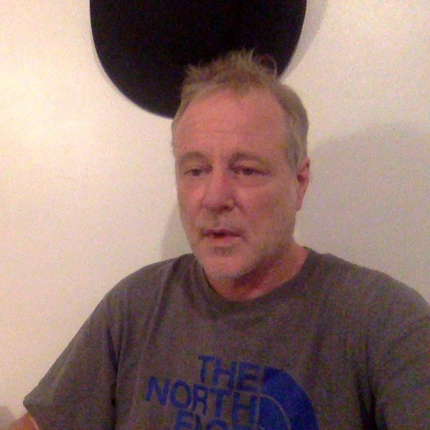

About Us
About Us

Ian Beardsley studied physics at The University of Oregon and worked in astronomy For four years at the state observatory, Pine Mountain Observatory in the high desert East of Bend, Oregon. His name appears on several papers in the Astrophysical Journal.
The Abstract Cosmos by Ian Beardsley
Abstract Cosmology by Ian Beardsley
Reconciliatio y Exploraciones by Ian Beardsley